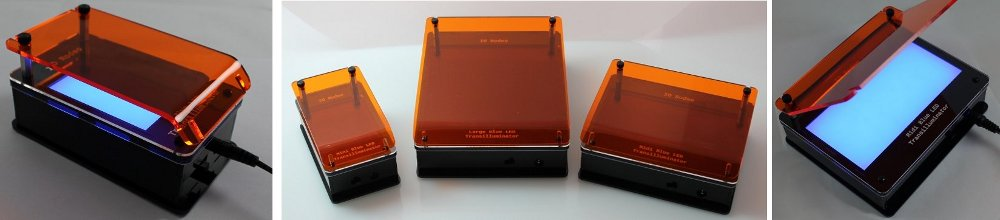
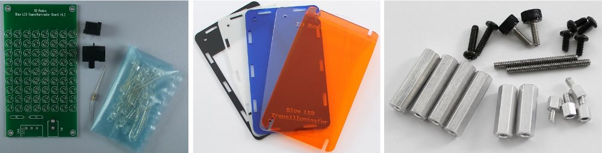

Open source DIY kit¶
This documentation describes how to make a blue LED (470nm) transilluminator for DNA imaging. There are several kit sizes available:
- Mini transilluminator kit (IMG-04-01): 6 cm x 7cm viewing area, 9x8 led array
- Midi transilluminator kit (IMG-04-02): 7 cm x 14 cm viewing area, 9x18 led array
- Large transilluminator kit (IMG-04-03): 14 cm x 14 cm viewing area, 18x18 led array

Each blue LED transilluminator kit comes with the following parts:
- Electronics: LED array PCB, set of blue LEDs, switch, DC Jack and resistors
- Hardware: Standoffs, screws and a mini-screwdriver for easy assembly
- Enclosure and filters: Laset cut acrylics including the black enclosure, diffuser, amber and blue filters

License¶
This is an open source hardware project licensed under the Creative Commons Attribution 3.0 License.
Design files¶
- KiCad PCB design and Gerber files - https://bitbucket.org/iorodeo/led_transilluminator_pcb
- Acrylic enclosure - https://bitbucket.org/iorodeo/led_transilluminator_enclosure